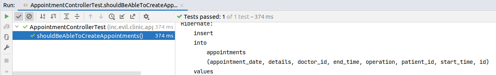

Today we are going to learn about the difference between optimistic and pessimistic concurrency control using
Spring-Data-Jpa.
Concurrency control is about managing concurrent access to our data. Let’s say for example that we have a hotel booking system and
there’s only one room available in the hotel and 2 users at the same time try to book it. Who will get the room?
Well, it’s possible that both of them will succeed, but that will leave the hotel staff with an awkward situation.
Concurrency control patterns help to deal with issues like this, either by preventing or detecting them.
There are 2 flavours of
concurrency control - pessimistic and optimistic locking.
Pessimistic locking - prevents conflicts. We’re pessimistic and sure that conflicts will happen, therefore we block concurrent
modifications by locking the data for exclusive access.
Optimistic locking - detects conflicts. We’re optimistic that conflicts (or concurrent modifications) won’t happen, but
if they do happen, we detect and deal with them, usually by issuing retries or returning an error response.
Let’s take a closer look at both of these approaches in practice.
Real-world example
Let’s try to implement a doctor appointment system - a system where patients can create appointments to a doctor (for an annual
physical for example). Here’s the domain model:
1
2
3
4
5
6
7
8
9
10
11
12
13
14
15
16
17
18
19
@Entity@Table(name="doctors")publicclassDoctorextendsAbstractEntity{privateStringfirstName;privateStringlastName;@Column(name="email_address",nullable=false)privateStringemail;@Enumerated(EnumType.STRING)privateSpecialtyspecialty;privateStringtelephoneNumber;protectedDoctor(){}//Getters, setters, builder, equals & hashcode were omitted for brevity
}
We have the DoctorJPA entity, having some simple fields identifying a particular doctor. Next, we’ll need a patient, which can look like this:
1
2
3
4
5
6
7
8
9
10
11
12
13
14
@Entity@Table(name="patients")publicclassPatientextendsAbstractEntity{privateStringfirstName;privateStringlastName;privateStringphoneNumber;privateStringsource;privateLocalDatebirthDate;protectedPatient(){}//Getters, setters, builder, equals & hashcode were omitted for brevity
}
Nothing fancy yet, another simple JPA entity representing a patient. Finally, let’s have a look at the Appointment entity, representing an
appointment of a patient to a doctor which occurs at a specific date and time.
We have just a simple HTTPPOST endpoint for creating a new appointment. The controller just delegates the request to the AppointmentFacade,
which we’ll see briefly, and then it returns a response containing the Location header pointing to the newly created appointment. The request payload will look like this:
1
2
3
4
5
6
7
8
9
10
11
POSThttp://localhost:8080/api/v1/appointments
Content-Type:application/json{"startDate":"2021-12-13T17:00","endDate":"2021-12-13T18:00","operation":"Annual physical","doctorId":"f23e4567-e89b-12d3-a456-426614174000","patientId":"f44e4567-ef9c-12d3-a45b-52661417400a","details":"Just a regular annual physical"}
Moving on, let’s have a look at the AppointmentFacade. The purpose of it is to just convert the web-specific DTO - the UpsertAppointmentRequest into the domain model the service
layer understands - the AppointmentJPA entity. Also before returning the response, it converts the Appointment entity (which the service layer returned)
to another web-specific DTO - the AppointmentResponse in this case.
Now let’s get to the most interesting part - the DoctorService.create() method. It should persist the new appointment to the database, but before that,
we need to make sure that the new appointment does not overlap with an existing appointment. For example if doctor Mike Smith has already an appointment from
16:00 till 18:00 on 2022-05-23, we should not be able to add a new appointment, on the same day, which starts from 17:00 and ends at 17:45 for example, since that means that the doctor will have to
deal with 2 patients at the same time somehow. For that we have the AppointmentService.checkForConflicts() which tries to detect if the new appointment will create any overlaps (see the code below):
@Service@Slf4jpublicclassAppointmentService{privatefinalAppointmentRepositoryappointmentRepository;publicAppointmentService(AppointmentRepositoryappointmentRepository){this.appointmentRepository=appointmentRepository;}@TransactionalpublicAppointmentcreate(AppointmentappointmentToCreate){checkForConflicts(appointmentToCreate);returnappointmentRepository.save(appointmentToCreate);}privatevoidcheckForConflicts(AppointmentappointmentToCreate){LocalDateappointmentDate=appointmentToCreate.getAppointmentDate();LocalTimestartTime=appointmentToCreate.getStartTime();LocalTimeendTime=appointmentToCreate.getEndTime();StringdoctorId=appointmentToCreate.getDoctor().getId();Doctordoctor=appointmentToCreate.getDoctor();Optional<Appointment>conflictingAppointment=appointmentRepository.findConflictingAppointment(doctorId,appointmentDate,startTime,endTime);conflictingAppointment.ifPresent(overlappingAppointment->{thrownewConflictingAppointmentsException("Doctor "+doctor.getFirstName()+" "+doctor.getLastName()+" has already an appointment, starting from "+overlappingAppointment.getStartTime()+" till "+overlappingAppointment.getEndTime());});}}
Finally let’s look at how the AppointmentRepository.findConflictingAppointment() method looks like. It’s just a JPQL query trying to find and existing appointment, in the same day
which has overlapping startTime and endTime with the new appointment we intend to insert.
1
2
3
4
5
6
7
8
9
10
11
@RepositorypublicinterfaceAppointmentRepositoryextendsJpaRepository<Appointment,String>{@Query("""
select a from Appointment a where a.doctor.id = :doctorId and a.appointmentDate = :date
and (:startTime < a.endTime and :endTime > a.startTime)
""")Optional<Appointment>findConflictingAppointment(@Param("doctorId")StringdoctorId,@Param("date")LocalDatedate,@Param("startTime")LocalTimestartTime,@Param("endTime")LocalTimeendTime);}
Quite a lot of code, isn’t it? On the first glance, it looks good, we’ve tried to prevent overlapping appointments and that means that we can ship the code and not worry about
corrupted data - having 2 or more patients appointed to the same doctor in the same day and time range. We can sleep well without worrying about angry calls in the middle of the night.
Or can we?
Time to write some tests.
Testing the solution
Let’s try to write an integration test, which spins-up the whole application, executes a real HTTP request which will go through all the layers of the application
(though the controller, facade, service, repository and back) and see if it works:
If we try to run the test, it’ll pass with flying colors.

But is it really working? Well, not really. We haven’t implemented any form of concurrency control in our application.
We have the AppointmentRepository.findConflictingAppointment() method, but is it really working?
Spoiler alert - it doesn’t. We have a race condition, the check-then-act sequence. When we want to insert a new appointment,
we first check if we won’t create overlapping appointments (by calling the AppointmentRepository.findConflictingAppointment()), then
if we didn’t spot an overlap, we insert the new appointment.
That means that there’s a possibility that 2 different users at the same time will try to create an appointment to the same doctor,
on the same day and time rage and both of them will succeed. Both of them checked for overlapping appointments at the same time.
They didn’t find anything and proceeded with the insert. Now we have 2 appointments with the same time range which succeeded. The doctor wil definitely be confused.
Let’s write a better test to try to simulate this issue.
The test tries to call the appointment-creation endpoint from 5 concurrent threads, and all of them try to create an appointment for the same doctor, on the same day and time range.
Ideally only one of those 5 thread should succeed and the rest should fail (hence the assertion at the end - assertThat(allAppointmentsResponse.getBody().length).isEqualTo(1)).
Guess what - the test fails! The reason - lack of concurrency control!
Let’s try to fix it.
Using pessimistic locking
We’ve mentioned that pessimistic locking can help to prevent conflicts - concurrent data modifications. We can use this technique to try to fix our broken AppointmentService.create() method.
When using pessimistic locking with Hibernate, a SQLSelect for update is used under the hood. Select for update works by placing an exclusive lock on all of the rows returned, so that
any other transaction will be blocked from accessing those rows (both for read and update).
We can use this trick to obtain mutual exclusion for our AppointmentService.create() method.
But what exactly should we lock? Since what we want to prevent is having 2 appointments for the same doctor at the same time, we can execute a Select for update on the doctor, something
like this:
effectively gaining exclusive access to the doctor. From the moment the lock was obtained till the transaction will be committed, no other transaction will be able to read (or modify) the doctor.
We can add a new method to our DoctorRepository for that:
1
2
3
4
5
6
@RepositorypublicinterfaceDoctorRepositoryextendsJpaRepository<Doctor,String>{@Lock(LockModeType.PESSIMISTIC_WRITE)@Query("select d from Doctor d where d.id = :id")DoctorfindByIdAndLock(@Param("id")Stringid);}
Notice the @Lock(LockModeType.PESSIMISTIC_WRITE) annotation - it’s the Spring-Data's way of telling that we want to use pessimistic locking for the method.
Note
There’s also @Lock(LockModeType.PESSIMISTIC_READ) which is translated to Select for share. With this type of lock multiple transactions
can read the database table row at the same time, but “writer” transactions (executing updates) will be blocked. And vice versa, when an update is in progress, no “reader” transactions
can obtain the shared lock.
Now, we can try to use this method to obtain mutual-exclusion in our AppointmentService.create() method:
@Service@Slf4jpublicclassAppointmentService{privatefinalAppointmentRepositoryappointmentRepository;privatefinalDoctorRepositorydoctorRepository;publicAppointmentService(AppointmentRepositoryappointmentRepository,DoctorRepositorydoctorRepository){this.appointmentRepository=appointmentRepository;this.doctorRepository=doctorRepository;}@TransactionalpublicAppointmentcreate(AppointmentappointmentToCreate){checkForConflicts(appointmentToCreate);returnappointmentRepository.save(appointmentToCreate);}privatevoidcheckForConflicts(AppointmentappointmentToCreate){LocalDateappointmentDate=appointmentToCreate.getAppointmentDate();LocalTimestartTime=appointmentToCreate.getStartTime();LocalTimeendTime=appointmentToCreate.getEndTime();StringdoctorId=appointmentToCreate.getDoctor().getId();Doctordoctor=doctorRepository.findByIdAndLock(doctorId);//here we obtain an exclusive lock for the doctor. From this point onward,
//only the current transaction can continue and others will be blocked here
//since they can't lock the doctor row
Optional<Appointment>conflictingAppointment=appointmentRepository.findConflictingAppointment(doctorId,appointmentDate,startTime,endTime);conflictingAppointment.ifPresent(overlappingAppointment->{thrownewConflictingAppointmentsException("Doctor "+doctor.getFirstName()+" "+doctor.getLastName()+" has already an appointment, starting from "+overlappingAppointment.getStartTime()+" till "+overlappingAppointment.getEndTime());});}}
By adding the call to DoctorRepository.findByIdAndLock(doctorId), the first transaction to successfully execute this call will
obtain the exclusive lock and therefore, the check-then-act sequence will be executed with mutual-exclusion, eliminating the race condition.
Let’s run the test:
The test passed, which is very nice.
This solution has some drawbacks though. Since during appointment-creation we place an exclusive lock on the doctor, this means that no other transaction can
read the doctor row from the database. If for example when somebody creates an appointment and at the same time some other transaction
wants to modify the doctor, to change its phone number for example, this transaction will also be blocked. This means that the throughput of our application will suffer a little,
but it can be a price worth paying for having consistent and non-corrupted data.
So, with this solution we can’t update our doctor’s phone number and create an appointment to the same doctor at the same time. We can fix it by moving the telephoneNumber column to another table,
doctor_details for example. This will increase the throughput a bit.
Optimistic locking
Let’s look at another form of concurrency control - optimistic locking, which allows us to detect conflicts (or concurrent modifications). With this approach, we no longer lock anything
and don’t prevent concurrent access, so the throughput (ideally) should not suffer. Instead we let all transactions do their work concurrently, and then at the end decide
to commit or rollback them, depending upon whether concurrent modifications we’re spotted or not.
In order to use optimistic locking, we’ll need to change our JPA entities and add a new field annotation with the @Version annotation, like shown below:
@Entity@Table(name="doctors")publicclassDoctorextendsAbstractEntity{@Column(name="first_name",nullable=false)privateStringfirstName;@Column(name="last_name",nullable=false)privateStringlastName;@Column(name="email_address",nullable=false)privateStringemail;privateStringtelephoneNumber;@Enumerated(EnumType.STRING)privateSpecialtyspecialty;@Versionprivatelongversion;//In order to use optimistic locking, we add this field
}
How it works
Whenever you have a JPA entity which could be updated by concurrent transactions, most likely you should have optimistic locking in place.
Without any locking mechanism, there is potential for silent data loss, a phenomenon known as lost updates.
Let’s look at the lost update anomaly more closely.
Let’s say that 2 transactions simultaneously try to update the doctor’s name:
As we can see, all the work done by Transaction-2 was lost. Imagine that the above flow was something more serious, like booking the last available room in a hotel. We need a way to prevent
that. Optimistic locking to the rescue!
Now if we implement optimistic locking, the flow will look like this:
What’s changed is that now the doctor table has a new column called version. Every time the doctor's database row is changed, Hibernate will increment that version and if during
increment it will spot a version mismatch, it will throw a OptimisticLockException. In that case, the Transaction-1 should be re-executed since it was using stale data.
The version field will be incremented by Hibernate every time the entity changes its state.
Note
Hibernate supports the following @Version field types:
short or Short
int or Integer
long or Long
java.sql.Timestamp
Java 8 Date/Time such as java.time.Instant
Using a numeric type which is large-enough (like Long) is the safest approach. Using time-based values, acting as “last modified time” is a bit more risky since theoretically it’s possible to have 2 threads
using the same timestamp.
Since our Doctor entity now has a @Version field, Hibernate will automatically prevent lost updates whenever the Doctor entity changes its state. But we have a completely different
problem. We want to prevent appointments with overlapping time ranges, and during the creation of an appointment, the Doctor entity does not change its state. The idea is that we can
force Hibernate to update the Doctor's version, thus preventing concurrent insertions of appointments.
Let’s update our DoctorRepository.findByIdAndLock() method to make it use optimistic locking. For that we’ll add the @Lock(LockModeType.OPTIMISTIC_FORCE_INCREMENT) annotation.
1
2
3
4
5
6
@RepositorypublicinterfaceDoctorRepositoryextendsJpaRepository<Doctor,String>{@Lock(LockModeType.OPTIMISTIC_FORCE_INCREMENT)@Query("select d from Doctor d where d.id = :id")DoctorfindByIdAndLock(@Param("id")Stringid);}
Our AppointmentService didn’t suffer any changes, it still calls the DoctorRepository.findByIdAndLock() method, but this time
using optimistic-locking (see below):
@Service@Slf4jpublicclassAppointmentService{privatefinalAppointmentRepositoryappointmentRepository;privatefinalDoctorRepositorydoctorRepository;publicAppointmentService(AppointmentRepositoryappointmentRepository,DoctorRepositorydoctorRepository){this.appointmentRepository=appointmentRepository;this.doctorRepository=doctorRepository;}@TransactionalpublicAppointmentcreate(AppointmentappointmentToCreate){checkForConflicts(appointmentToCreate);returnappointmentRepository.save(appointmentToCreate);}privatevoidcheckForConflicts(AppointmentappointmentToCreate){LocalDateappointmentDate=appointmentToCreate.getAppointmentDate();LocalTimestartTime=appointmentToCreate.getStartTime();LocalTimeendTime=appointmentToCreate.getEndTime();StringdoctorId=appointmentToCreate.getDoctor().getId();Doctordoctor=doctorRepository.findByIdAndLock(doctorId);//here we use a LockModeType.OPTIMISTIC_FORCE_INCREMENT
//which means that at flush-time, Hibernate will try
//to detect if a concurrent modification happened and rollback the
//transaction if so
Optional<Appointment>conflictingAppointment=appointmentRepository.findConflictingAppointment(doctorId,appointmentDate,startTime,endTime);conflictingAppointment.ifPresent(overlappingAppointment->{thrownewConflictingAppointmentsException("Doctor "+doctor.getFirstName()+" "+doctor.getLastName()+" has already an appointment, starting from "+overlappingAppointment.getStartTime()+" till "+overlappingAppointment.getEndTime());});}}
Now let’s run our test to see if it works:
Wonderful, the test passed, signaling that our solution worked.
Pessimistic vs Optimistic locking
At the first glance, we’ve achieved the same thing with both pessimistic and optimistic locking. What are the subtle differences? Let’s write a test to find out.
We are going to try to create 3 appointments at the same time, for the same doctor, something like this:
Appointment A with start time 2022-05-23T16:00 and end time 2022-05-23T17:00
Appointment B with start time 2022-05-23T16:00 and end time 2022-05-23T17:00 (the same as above)
Appointment C with start time 2022-05-23T11:00 and end time 2022-05-23T14:00
Appointment A and B have overlapping times, so only one of them should succeed (depending on which one will be first). Appointment C does not create any overlaps,
so it should succeed in our case. Thus, we expect that only 2 appointments should be created. Either A and C or B and C.
Now let’s write our test, which will be a bit complicated. We’ll be using pessimistic locking first. Let’s update the DoctorRepository to use pessimistic locking:
1
2
3
4
5
6
@RepositorypublicinterfaceDoctorRepositoryextendsJpaRepository<Doctor,String>{@Lock(LockModeType.PESSIMISTIC_WRITE)@Query("select d from Doctor d where d.id = :id")DoctorfindByIdAndLock(@Param("id")Stringid);}
@Slf4j@SpringBootTest(webEnvironment=SpringBootTest.WebEnvironment.RANDOM_PORT)publicclassPessimisticVsOptimisticAppointmentControllerTestextendsAbstractWebIntegrationTest{privatestaticfinalintNUMBER_OF_CONCURRENT_USERS=3;privatefinalCountDownLatchstartLatch=newCountDownLatch(1);privatefinalCountDownLatchrequestLatch=newCountDownLatch(NUMBER_OF_CONCURRENT_USERS);privatefinalExecutorServicerequestPool=Executors.newFixedThreadPool(NUMBER_OF_CONCURRENT_USERS);@TestpublicvoidshouldBeAbleToCreateTwoAppointments(){IntStream.rangeClosed(1,2).forEach((item)->{//Execute simultaneously 2 overlapping appointments: A and B
requestPool.submit(()->{await(startLatch);log.info("Executing create appointment HTTP request");Stringpayload="""
{
"doctorId": "620e11c0-7d59-45be-85cc-0dc146532e78",
"patientId": "f44e4567-ef9c-12d3-a45b-52661417400a",
"startDate": "2022-05-23T16:00",
"endDate": "2022-05-23T17:00",
"operation": "Annualphysical",
"details": "Newpatient"
}
""";RequestEntity<String>request=makeRequestFor("/api/v1/appointments/",HttpMethod.POST,payload);ResponseEntity<String>response=restTemplate.exchange(request,String.class);log.info("Received HTTP status code: {}",response.getStatusCode().value());requestLatch.countDown();});});requestPool.submit(()->{//Execute appointment C, which doesn't have any overlaps
await(startLatch);log.info("Executing create appointment HTTP request");Stringpayload="""
{
"doctorId": "620e11c0-7d59-45be-85cc-0dc146532e78",
"patientId": "f44e4567-ef9c-12d3-a45b-52661417400a",
"startDate": "2022-05-23T11:00",
"endDate": "2022-05-23T14:00",
"operation": "Annualphysical",
"details": "Newpatient"
}
""";RequestEntity<String>request=makeRequestFor("/api/v1/appointments/",HttpMethod.POST,payload);ResponseEntity<String>response=restTemplate.exchange(request,String.class);log.info("Received HTTP status code: {}",response.getStatusCode().value());requestLatch.countDown();});startLatch.countDown();await(requestLatch);RequestEntity<AppointmentResponse[]>allAppointmentsRequest=makeRequestFor("/api/v1/appointments/",HttpMethod.GET);ResponseEntity<AppointmentResponse[]>allAppointmentsResponse=restTemplate.exchange(allAppointmentsRequest,AppointmentResponse[].class);assertThat(allAppointmentsResponse.getStatusCode().value()).isEqualTo(HttpStatus.OK.value());log.info("All appointments: {}",Arrays.toString(allAppointmentsResponse.getBody()));assertThat(allAppointmentsResponse.getBody()).contains(makeExpectedAppointments());//We expect 2 appointments to be created
}privateAppointmentResponse[]makeExpectedAppointments(){returnnewAppointmentResponse[]{AppointmentResponse.builder().operation("Annual physical").startDate("2022-05-23T16:00")//This is either the Appointment A or B
.endDate("2022-05-23T17:00").doctor(DoctorResponse.builder().id("620e11c0-7d59-45be-85cc-0dc146532e78").firstName("Sponge").lastName("Bob").telephoneNumber("37369666667").email("sponge-bob@gmail.com").specialty("ORTHODONTIST").build()).patient(PatientResponse.builder().id("f44e4567-ef9c-12d3-a45b-52661417400a").firstName("Jim").lastName("Morrison").phoneNumber("+37369952147").birthDate("1994-12-13").build()).details("New patient").build(),AppointmentResponse.builder().operation("Annual physical").startDate("2022-05-23T11:00")//This is the Appointment C
.endDate("2022-05-23T14:00").doctor(DoctorResponse.builder().id("620e11c0-7d59-45be-85cc-0dc146532e78").firstName("Sponge").lastName("Bob").telephoneNumber("37369666667").email("sponge-bob@gmail.com").specialty("ORTHODONTIST").build()).patient(PatientResponse.builder().id("f44e4567-ef9c-12d3-a45b-52661417400a").firstName("Jim").lastName("Morrison").phoneNumber("+37369952147").birthDate("1994-12-13").build()).details("New patient").build()};}@AfterEachpublicvoidtearDown()throwsInterruptedException{requestPool.shutdown();requestPool.awaitTermination(10,TimeUnit.SECONDS);requestPool.shutdownNow();}privatevoidawait(CountDownLatchlatch){try{latch.await();}catch(InterruptedExceptione){thrownewRuntimeException(e);}}}
Now, let’s run it and see what happens:
All good, the test passes so everything works as expected. Now let’s see what will happen when we’ll switch the DoctorRepository to use optimistic locking. For that we’ll change the
DoctorRepository.findByIdAndLock() method and annotate it with @Lock(LockModeType.OPTIMISTIC_FORCE_INCREMENT), like shown below:
1
2
3
4
5
6
@RepositorypublicinterfaceDoctorRepositoryextendsJpaRepository<Doctor,String>{@Lock(LockModeType.OPTIMISTIC_FORCE_INCREMENT)//Use optimistic locking
@Query("select d from Doctor d where d.id = :id")DoctorfindByIdAndLock(@Param("id")Stringid);}
Let’s re-run the test:
And it fails. It turns out that when using optimistic locking, only one appointment will be successfully created (either A, B or C), depending on which one was first.
It is very unfortunate to see that we can’t create the appointment C. It was rejected, even though it doesn’t create any overlaps.
When using optimistic locking, with high concurrency, in our case we can create only one appointment. To obtain the desired outcome - having appointment C created along with another one
(either A or B), we can either return an error response to the user and ask him to re-execute the request or we can implement the retry on the server side.
Implementing retries on the server-side with Spring Retry
In order to implement retries on the server side, we can use Spring Retry. For that, we’ll add the following Maven dependency:
Almost done. Now we can use the @Retryable annotation to specify what method should be re-executed in case of optimistic lock failures. Spring-Data-Jpa will throw the
ObjectOptimisticLockingFailureException whenever we have concurrent modifications of a versioned JPA entity. A good candidate for retries it the AppointmentFacade.create() method
(which is shown below), since it is the one starting the transaction:
1
2
3
4
5
6
7
8
9
10
11
@ComponentpublicclassAppointmentFacade{//...
@Retryable(ObjectOptimisticLockingFailureException.class)//Retry 3 times in case of ObjectOptimisticLockingFailureException
publicAppointmentResponsecreate(UpsertAppointmentRequestrequest){AppointmentappointmentToCreate=toAppointment(request);AppointmentcreatedAppointment=appointmentService.create(appointmentToCreate);returnAppointmentResponse.from(createdAppointment);}//...
}
Let’s re-run our test to see if using retries helped:
Looking good, the test passed. The gist is that whenever we have optimistic locking in place, sometimes we should also implement server-side retries.
Using synchronized keyword
Since our application can’t perform well under concurrent requests, one attempt to solve the issue could be to prevent concurrent executions of the AppointmentService.create() method
(since it’s the one having the race-condition with the check-then-act sequence). We can obtain mutual-exclusion for the save method by adding the synchronized keyword.
Will it solve the issue? Well, almost. Let’s try it out:
1
2
3
4
5
6
7
8
9
10
11
12
13
14
15
16
17
@Service@Slf4jpublicclassAppointmentService{privatefinalAppointmentRepositoryappointmentRepository;privatefinalDoctorRepositorydoctorRepository;publicAppointmentService(AppointmentRepositoryappointmentRepository,DoctorRepositorydoctorRepository){this.appointmentRepository=appointmentRepository;this.doctorRepository=doctorRepository;}@TransactionalpublicsynchronizedAppointmentcreate(AppointmentappointmentToCreate){//synchronized keyword was added
checkForConflicts(appointmentToCreate);returnappointmentRepository.save(appointmentToCreate);}}
The test still fails. Very strange isn’t it. Here’s the explanation:
Explanation
Since the AppointmentService class has @Transactional methods, Spring will create a proxy for the AppointmentService.
The original AppointmentService.create() method is synchronized, but the same method from the proxy isn’t. Also, the proxy is the one performing the EntityManager flush before the commit.
That effectively means that at the time we’ve exited the synchronized method, the SQL inserts were not executed yet. That leaves time for another thread to grab the lock and start executing
the create() method. This means that the second thread might not see the previously inserted appointment so it will come to the conclusion that no overlapp is present and insert successfully
the conflicting appointment.
What we need to do is to ensure that lock is released only after the proxy flushed the persistence context and committed the transaction. We can achieve this by placing a synchronized block
in the facade, like this:
@ComponentpublicclassAppointmentFacade{privatefinalAppointmentServiceappointmentService;privatefinalDoctorServicedoctorService;privatefinalPatientServicepatientService;publicAppointmentFacade(AppointmentServiceappointmentService,DoctorServicedoctorService,PatientServicepatientService){this.appointmentService=appointmentService;this.doctorService=doctorService;this.patientService=patientService;}publicAppointmentResponsecreate(UpsertAppointmentRequestrequest){AppointmentappointmentToCreate=toAppointment(request);AppointmentcreatedAppointment=null;synchronized(this){//We need to add the synchronized block here
createdAppointment=appointmentService.create(appointmentToCreate);}returnAppointmentResponse.from(createdAppointment);}privateAppointmenttoAppointment(finalUpsertAppointmentRequestrequest){//...
}}
Let’s try it out:
It appears to be working at the first glance, but it’s the worst solution (it can hardly can be called a solution). This solution will limit our ability to scale the
application not only because the throughput will be reduced significantly but also we are unable to run another instance of our application. If we run the second instance of our application,
we’ll have another JVM with a brand-new heap so we lose mutual exclusion. With the synchronized keyword we obtain mutual-exclusion per JVM so a second JVM will bring back our
problem with the race condition.
Using ShedLock
Instead of using the synchronized keyword, we can use a library like ShedLock. Though this library was designed
for preventing @Scheduled methods executing concurrently when we start multiple instances of our application, we can safely use it as a distributed lock as well.
We’ll need to add the following Maven dependencies:
After that we’ll add the following Java configuration, where we specify the DataSource (since the lock metadata is sored in the database) and we also
configure 2 parameters: database table name which holds the locks and the default lock timeout, like this:
Almost ready. Now we can annotate the method for which we want to obtain mutual-exclusion across multiple application instances with the @SchedulerLock annotation, (see below):
@Service@Slf4jpublicclassAppointmentService{privatestaticfinalStringCREATE_APPOINTMENT_LOCK_NAME="createAppointmentLock";privatefinalAppointmentRepositoryappointmentRepository;publicAppointmentService(AppointmentRepositoryappointmentRepository){this.appointmentRepository=appointmentRepository;}@Transactional@SchedulerLock(name=CREATE_APPOINTMENT_LOCK_NAME)publicAppointmentcreate(AppointmentappointmentToCreate){checkForConflicts(appointmentToCreate);returnappointmentRepository.save(appointmentToCreate);}privatevoidcheckForConflicts(AppointmentappointmentToCreate){LocalDateappointmentDate=appointmentToCreate.getAppointmentDate();LocalTimestartTime=appointmentToCreate.getStartTime();LocalTimeendTime=appointmentToCreate.getEndTime();StringdoctorId=appointmentToCreate.getDoctor().getId();Doctordoctor=appointmentToCreate.getDoctor();Optional<Appointment>conflictingAppointment=appointmentRepository.findConflictingAppointment(doctorId,appointmentDate,startTime,endTime);conflictingAppointment.ifPresent(overlappingAppointment->{thrownewConflictingAppointmentsException("Doctor "+doctor.getFirstName()+" "+doctor.getLastName()+" has already an appointment, starting from "+overlappingAppointment.getStartTime()+" till "+overlappingAppointment.getEndTime());});}}
That’s it. Now we can start multiple instances of our application and still have the desired behavior - no overlapping appointments. The downside being that we’ve added a
new dependency. Let’s run the test:
And it passes as well.
Conclusion
In this blog post we’ve looked at 2 forms of concurrency control - optimistic and pessimistic locking. We looked at a real-world example where we actually need a form of
concurrency control and explored various ways to fix the problem, like using pessimistic locking (which is backed by select for update), optimistic locking which uses version checks.
We saw that when using optimistic locking, sometimes server-side retries are needed.
We’ve also looked at the synchronized keyword and saw that it’s applicable only for the cases where we have only one instance of our application and don’t plan to add new ones.
And finally, the last solution we explored was using the ShedLock library, which basically is a distributed lock.